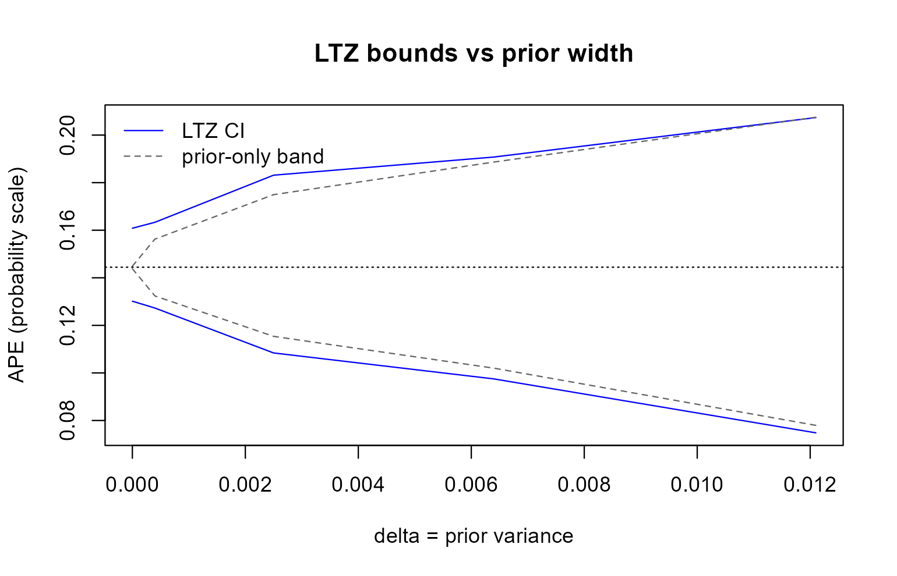

apexog offers the two summaries of Conley, Hansen and Rossi (2012). Both refit the model at assumed values of the violation γ; they differ in what you say about γ and in what the interval means.
Union of confidence intervals (uci)
You give a range, gmin to gmax, one per
instrument. apexog refits at grid evenly spaced values in
the range (every combination when there are several instruments),
computes the APE and its confidence interval at each, and reports the
union of the intervals.
What it guarantees. If the true γ lies in the range, the union covers the true APE with at least the nominal probability, because it contains the interval computed at the true γ. Nothing is assumed about where in the range γ lies. The price is width: the union is conservative.
Choosing the range. Think about the direction of a plausible violation. If only a positive direct effect is credible, use a one-sided range:
one <- apexog(f, endog = e, data = promotion, gmin = 0, gmax = 0.10,
grid = 6, verbose = FALSE)
confint(one)
#> lower upper
#> training 0.09709467 0.1608739The grid. The union is taken over the grid points,
so the grid should be fine enough to follow the estimate. The APE
usually moves smoothly and monotonically with γ, and then the
end points decide the bounds; a dozen points per instrument is ample.
With K instruments the grid has
gridK points, so keep it coarse when
K is large, or use the prior.
Several instruments. gmin and
gmax take one value per instrument, or a single value
applied to all.
Local to zero (ltz)
You give a prior for γ. apexog draws from it
iterations times (default 1,000), refits at every draw, and
records the APE and its standard error. It then adds to each estimate a
normal draw scaled by that refit’s standard error and reports the
percentile interval of these combined draws. This is the simulation
version of Conley, Hansen and Rossi’s equation (7), in which the
sampling distribution of the estimator and the term due to γ
are independent and add up. In a linear model it reproduces the familiar
V + AΩA’ interval of plausexog.
Two intervals. The headline interval is a confidence interval: as the prior shrinks to a point at zero it becomes the ordinary confidence interval at γ = 0. The prior-only range shows the spread of the point estimates across the prior, without sampling noise, and shrinks to a single point.
ltz <- apexog(f, endog = e, data = promotion, method = "ltz",
mu = 0, omega = 0.0025, iterations = 1000, seed = 101,
verbose = FALSE)
rbind(interval = unlist(ltz$bounds[, c("lower", "upper")]),
prior_only = unlist(ltz$prior_band[, c("lower", "upper")]))
#> lower upper
#> interval 0.1124416 0.1777557
#> prior_only 0.1168178 0.1721057The prior. A normal prior takes mu and
omega (a variance), one per instrument or one for all.
Other shapes:
# uniform between -0.1 and 0.1
apexog(f, endog = e, data = promotion, method = "ltz",
prior = "uniform", prior_params = list(c(-0.1, 0.1)))
# any distribution: a function returning an n x K matrix of draws
apexog(f, endog = e, data = promotion, method = "ltz",
prior = function(n) matrix(0.05 * rt(n, df = 4), ncol = 1))
# or the draws themselves, e.g. Stata's e(gamma_sim)
apexog(f, endog = e, data = promotion, method = "ltz", draws = my_draws)The built-in shapes are those of Stata’s distribution()
option: normal, uniform, chi-squared, t, gamma, Poisson and an empirical
donor vector ("special"). The prior is on the scale chosen
with gunits; see Which scale for
the violation?.
Draws and seeds. The interval is a percentile of a
finite number of draws, so it carries simulation error; 1,000 draws is a
sensible minimum for a 95% interval. Set seed for a
reproducible result. Draws whose refit fails are reported and left
out.
How the interval grows with the prior
sweep_omega reruns the simulation for a sequence of
prior variances and stores the interval and the prior-only range for
each (graphomega() in Stata). plot() then
draws the bounds against the prior width:
sw <- apexog(f, endog = e, data = promotion, method = "ltz",
mu = 0, omega = 0.0025, iterations = 200, seed = 303,
sweep_omega = c(1e-6, 0.0004, 0.0025, 0.0064, 0.0121),
verbose = FALSE)
sw$sweep
#> delta mu lower upper lower_prior upper_prior
#> 1 0.000001 0 0.13015849 0.1608360 0.14379175 0.1449264
#> 2 0.000400 0 0.12727841 0.1633372 0.13236471 0.1562672
#> 3 0.002500 0 0.10840441 0.1831360 0.11537630 0.1749523
#> 4 0.006400 0 0.09749183 0.1907676 0.10200825 0.1886663
#> 5 0.012100 0 0.07481864 0.2073640 0.07796171 0.2074930
plot(sw)
At a prior variance near zero the interval is the ordinary confidence interval and the prior-only range a point; as the prior widens, the prior dominates.
Which one?
Use the union when you can name a range that you are confident contains the violation and you want a guarantee that does not depend on anything else. Use the prior when you have a view about which violations are more likely than others; its interval is narrower, but it is only as good as the prior, including the scale on which the prior is stated. Reporting both is often the most informative: the union shows what the data say under the weakest assumption, the prior what they say under a specific belief.